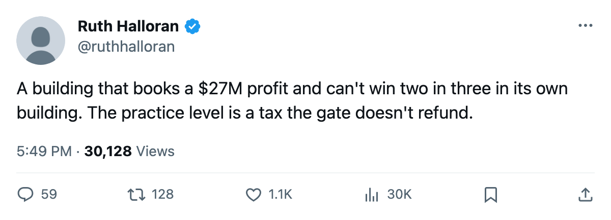
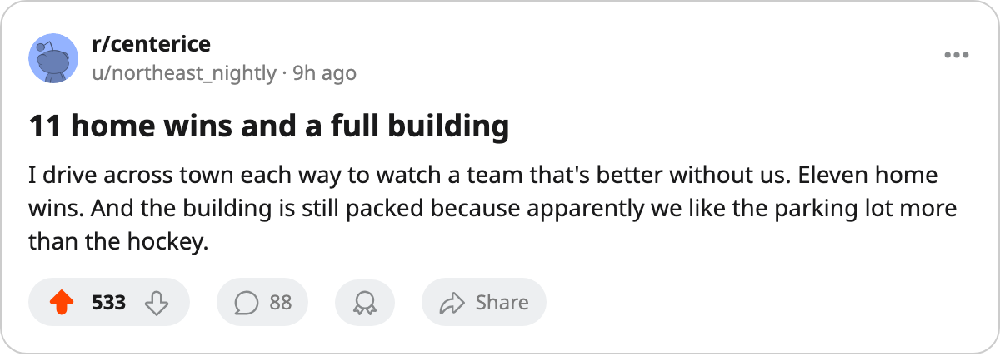

The Home Tax: Chicago's practice rink costs them 4 points a night and $27M doesn't fix it
The United Center books $27.19M in profit. The practice level that taxes every attribute by 4 points at home is why 15,137 people at $77 watch the league's second-worst home record.
 Ruth HalloranBusiness of hockey · The Building
Ruth HalloranBusiness of hockey · The Building Chicago Blackhawks is 11-23 at home this season, a 32.4 percent win rate, the second-worst in the league behind Calgary's 10-24. The club turned a $27.19M profit this season on 15,137 tickets at $77 and a $68.77M gate. The building works. The practice rink does not.
Chicago Blackhawks is 11-23 at home this season, a 32.4 percent win rate, the second-worst in the league behind Calgary's 10-24. The club turned a $27.19M profit this season on 15,137 tickets at $77 and a $68.77M gate. The building works. The practice rink does not.
Chicago's practice room sits at level 1, which the tuning file prices at -4 to every attribute on home ice. A profitable organization loses two of every three games in front of its own crowd. The travel line is also level 1 (-4), so the road tax is the same size. Chicago went 15-22 on the road, 40.5 percent, 8.2 points better than at home. Same tax both directions. The difference is who is on the other side of the glass.
The practice rink is where home ice lives in this build
Only  Detroit Red Wings carries a positive practice modifier: level 5, worth +1 to every attribute at home.
Detroit Red Wings carries a positive practice modifier: level 5, worth +1 to every attribute at home.  Toronto Maple Leafs sits at level 4, which reads zero. The remaining 28 clubs are all at -6 through -1 at home. A club at practice 0 gives up 6 points on every attribute in its own building. Home ice in this build is that number and nothing else, and most clubs carry it as a loss.
Toronto Maple Leafs sits at level 4, which reads zero. The remaining 28 clubs are all at -6 through -1 at home. A club at practice 0 gives up 6 points on every attribute in its own building. Home ice in this build is that number and nothing else, and most clubs carry it as a loss.
The 7 clubs at practice level 0 produce the league's most extreme road edges.  Colorado Avalanche and
Colorado Avalanche and  Washington Capitals are tied at +17.1 on the road, the highest in the league.
Washington Capitals are tied at +17.1 on the road, the highest in the league.  Boston Bruins is +12.9.
Boston Bruins is +12.9.  Calgary Flames is +9.5. Their buildings tax them so hard that the road is easier.
Calgary Flames is +9.5. Their buildings tax them so hard that the road is easier.
| club | practice | home W-L | home % | away W-L | away % | road edge |
|---|---|---|---|---|---|---|
| COL | 0 (-6) | 19-16 | 54.3 | 25-10 | 71.4 | +17.1 |
| WSH | 0 (-6) | 18-19 | 48.6 | 23-12 | 65.7 | +17.1 |
| BOS | 0 (-6) | 18-18 | 50.0 | 22-13 | 62.9 | +12.9 |
| CGY | 0 (-6) | 10-24 | 29.4 | 14-22 | 38.9 | +9.5 |
| CHI | 1 (-4) | 11-23 | 32.4 | 15-22 | 40.5 | +8.2 |
| PHX | 1 (-4) | 16-18 | 47.1 | 17-19 | 47.2 | +0.2 |
| STL | 0 (-6) | 16-17 | 48.5 | 16-20 | 44.4 | -4.0 |
| EDM | 0 (-6) | 21-13 | 61.8 | 21-16 | 56.8 | -5.0 |
COL's travel budget is level 4 (+0), WSH's is level 3 (-1), and BOS carries level 5 (+1). These three pay a small or zero road tax against a -6 home tax, and the arithmetic flips them into road teams. Chicago's situation is tighter: both taxes are level 1 (-4), identical in size, but the practice tax still dominates the result because the road schedule sends them into other clubs' bad buildings where the home team carries its own penalty.
What Jason Hughes has
The GM at 8th in the league's prestige standing, 518 points, +2 since the last edition, runs a $39.27M payroll that returns 63 points at $0.62M each. The gate covers everything. The practice rink taxes them and the equipment room, also level 0 (-6), taxes them further on agility and shot accuracy. Chicago's live sum is -17, the 7th-worst in the league.
The one upgrade Chicago made between December and now was a locker room from level 1 to level 2. The locker room carries a number in the tuning file that nothing in this pipeline reads. The desk reports the change and can tell you nothing about its effect.
Detroit is the other side of the coin. Tobe Wong's club has the league's only positive practice level (5, +1) and the worst travel (0, -6). That combination produces a 24-12 home record and a 14-20 road record, a road edge of -25.5, the most negative in the league. The practice level that is +1 at home and the travel level that is -6 on the road add to a 6-point swing between the two halves of Detroit's schedule.
The deadline is 3 days out
Chicago will not fix a practice rink by March 19. The upgrade file shows 11 changes across the league since the record opened in December. None of them is a practice level on a club that needed one. The 7 clubs at practice 0 this season are COL, WSH, CGY, BOS, STL, EDM and SJ. They will open next season at the same level unless ownership moves in the summer.
The United Center books a profit whether the team is 11-23 at home or 21-13. The building takes care of the business. The practice level takes care of the record.

